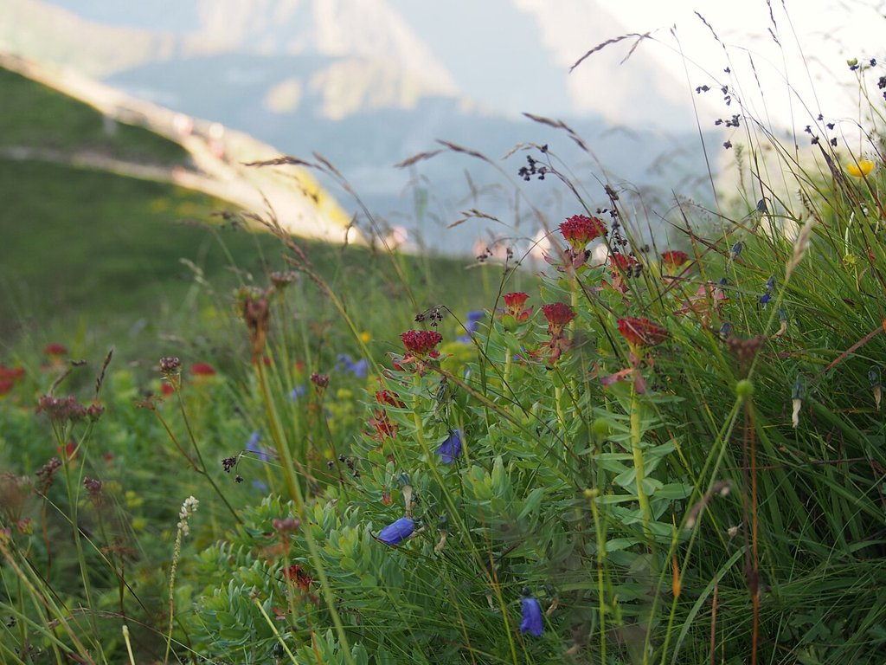

Cikk · Rózsagyökér
Rózsagyökér: fáradtságra népszerű, de a bizonyíték még vékony
November van, rövidek a napok, és ilyenkor sokan keresünk valamit, ami kicsit feldob. A rózsagyökér, vagy ahogy a dobozon gyakran áll, a Rhodiola, pont ezt ígéri: kevesebb stresszt, több energiát. Utánanéztem, mit tud róla a kutatás, és bevallom, kevesebbet, mint gondoltam.

Mi ez, és mire árulják?
A rózsagyökér hideg, magas hegyvidékeken nő Európában, Ázsiában és Észak-Amerikában. Nálunk a Kárpátokban is megtalálod. Oroszországban és Skandináviában régóta használják: munkabírásra, kitartásra, fáradtságra, levertségre, sőt a magashegyi rosszullét ellen is.
Ma azzal reklámozzák, hogy javítja a sportteljesítményt, a hangulatot és a koncentrációt, energiát ad és csökkenti a stresszt. Elolvastam az amerikai NIH komplementer és integratív egészségügyi központjának (NCCIH) lapját, amelyet 2025 áprilisában frissítettek.
Mit mond a NIH?
Amit a lap ír Nincs elég megbízható bizonyíték ahhoz, hogy kimondjuk, a rózsagyökér bármilyen egészségügyi célra hasznos. Az emberekkel végzett kutatások nagy része gyenge vagy közepes minőségű.
Sport Egy 2023-as spanyol áttekintés 13 kis vizsgálatot nézett meg, összesen 263 egészséges felnőttel. A legtöbbnél láttak valami kedvező hatást, például kevésbé érezték megerőltetőnek az edzést, de a vizsgálatok nagyon különbözőek voltak, és többségüknél magas volt a torzítás kockázata. A szerzők maguk írják, hogy jobb minőségű kutatás kell.
Hangulat Levertségre és depresszióra is vizsgálták, de ott sincs annyi adat, hogy bármit ajánlani lehessen. A depresszió komoly betegség: ha úgy érzed, ez lehet a gond, ne egy kapszulával kísérletezz, hanem beszélj orvossal.
Amire figyelj
A NIH szerint legfeljebb 12 hétig valószínűleg biztonságos szedni. Mellékhatásként szédülés, fejfájás, álmatlanság, szájszárazság vagy éppen fokozott nyálképződés előfordulhat. Leírtak kölcsönhatást a losartannal, ami egy gyakori vérnyomáscsökkentő. Terhesség és szoptatás alatt nem tudni, biztonságos-e, úgyhogy akkor inkább hagyd ki.
Szerintem, ha egy-két hétig kipróbálnád a téli fáradtságra, az belefér, de ne várj tőle csodát. Ha vérnyomásgyógyszert szedsz, előbb kérdezd meg a gyógyszerészt. És ha hetek óta fáradt vagy, érdemes vérvételen is megnézni, mi áll a háttérben, mert például vashiány vagy pajzsmirigy-gond is lehet az oka.
Források
- National Center for Complementary and Integrative Health, NIH. Rhodiola. Frissítve: 2025. április. https://www.nccih.nih.gov/health/rhodiola
- Sanz-Barrio PM, Noreen EE, Gilsanz-Estebaranz L, et al. Rhodiola rosea supplementation on sports performance: a systematic review of randomized controlled trials. Phytother Res. 2023;37(10):4414-4428. PubMed 37495266
- European Medicines Agency, Committee on Herbal Medicinal Products. Rhodiolae roseae rhizoma et radix. https://www.ema.europa.eu/en/medicines/herbal/rhodiolae-roseae-rhizoma-et-radix